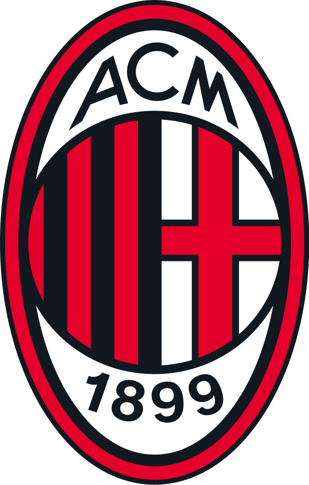
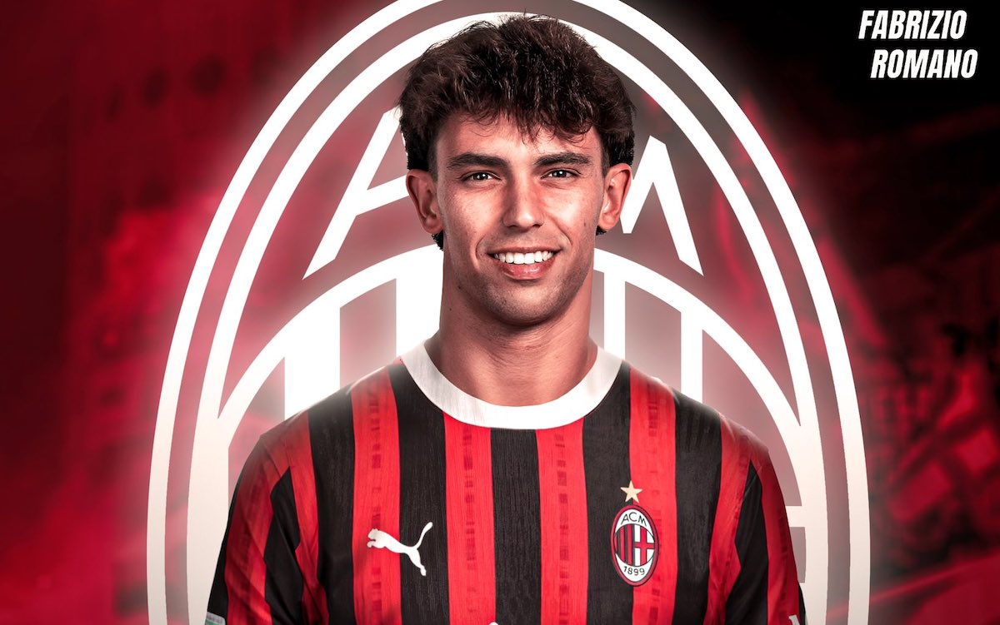

Inicio
Clubes
Barcelona
Benfica
Ac Milan
Chelsea
Atletico de madrid
Skills
Contacto
Associazione Calcio Milan

Club de futbol
La Associazione Calcio Milan S.p.A. también conocida como A. C. Milan, o simplemente Milan, es un club de fútbol italiano con sede en la ciudad de Milán, en la región de Lombardía.
